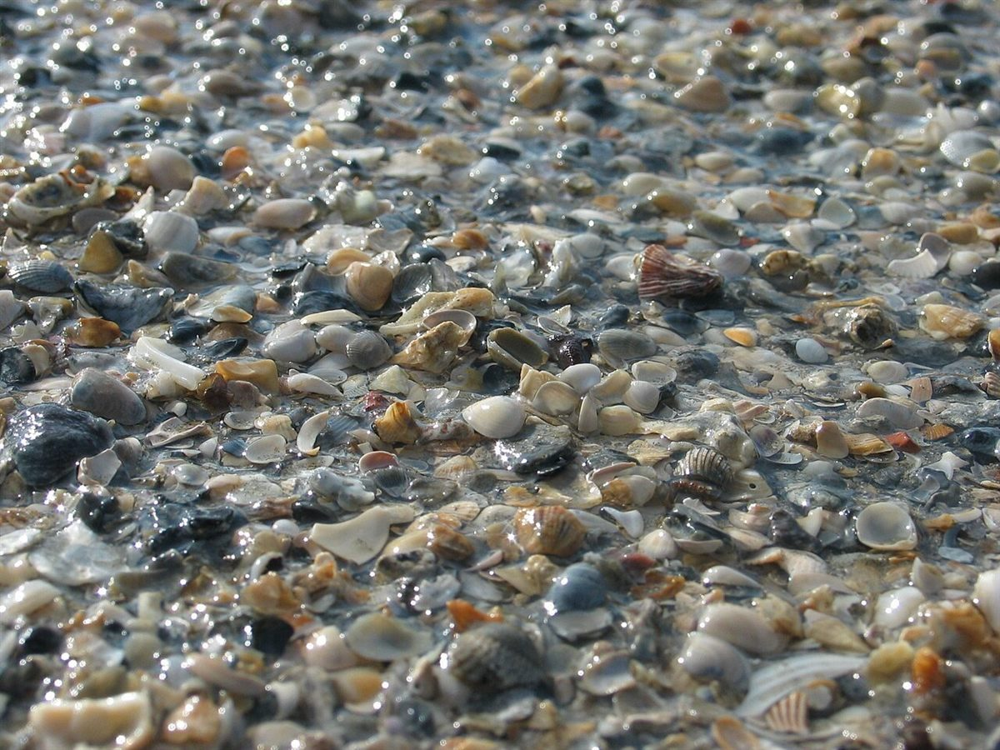

制作側の連想
「おもい」から、石ころの目方帖。
店名の由来は分かりません。制作側は「おもい」という音から「重い」を連想し、軽いものから重いものへ並べる「目方帖」を思いつきました。砂つぶ、小石、玉石、岩と、重さの順に写真を並べています。制作側の連想で、お店の理念・由来とは無関係です。
目方帖
軽いほうから、重いほうへ。
写真は指宿市のものではありません。国外・撮影地不明のフリー素材で、重さの数字は目安のイメージです。
- 1g砂つぶ

砂つぶ・国外のイメージ(英国) - 10g小石

小石・撮影地不明のイメージ - 100g玉石

玉石・国外のイメージ(ギリシャ) - 1kg+岩
岩・撮影地不明のイメージ
ご案内
お店のこと(確認できたものだけ)
| 所在地 | 〒891-0406 鹿児島県指宿市湯の浜2丁目19-17 |
|---|---|
| 電話 | 0993-26-3278 |
| 営業時間 | 準備中 |
| 定休日 | 準備中 |
| ご予約 | 準備中 |
| 駐車場 | 準備中 |
| SNS | Instagram @oimo_no_omoi_ibuski |